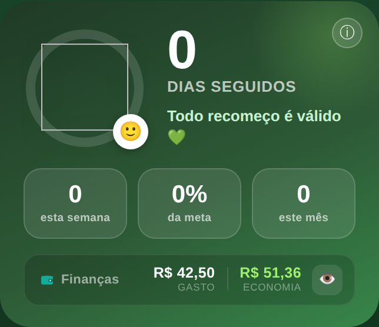
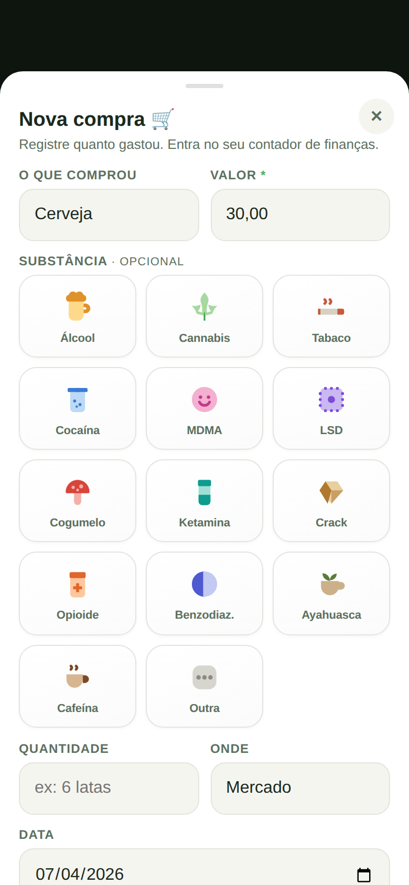
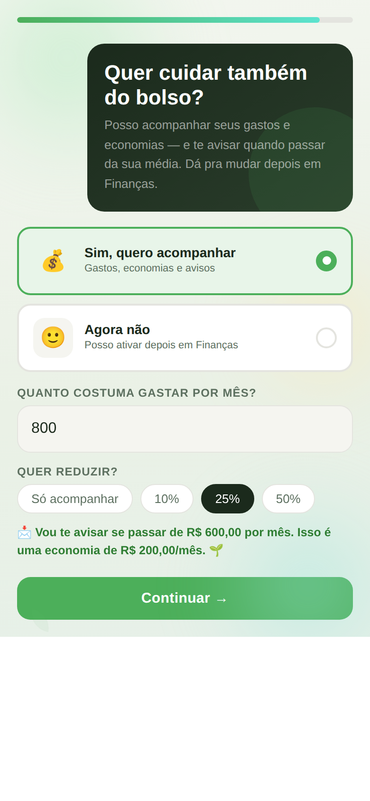

O contador fica na tela de início
Dentro do card verde (o mesmo dos "dias seguidos") aparece a faixa Finanças, mostrando Gasto e Economia.
- Toque no olho 👁️ pra mostrar ou ocultar os valores.
- Toque na faixa pra abrir o painel completo "Minhas finanças".

Toque no + e escolha o tipo
O botão + agora pergunta o que você quer registrar: uso ou compra. A compra tem histórico próprio, separado dos registros de uso.
- Informe o valor (obrigatório) e, se quiser, o que comprou, a substância (opcional), onde e a data.
- Cada compra entra automaticamente no contador de gastos.

Gastou, economizou e histórico
O painel reúne tudo: o total gasto, o total economizado e o histórico de compras. A economia vem de duas fontes somadas:
- Nas resistências: quando você resiste a uma vontade e informa quanto deixaria de gastar.
- Abaixo da referência: tudo que você gasta abaixo do seu limite definido conta como economia.

Já começa com sua média
Quem cria a conta agora recebe uma pergunta: "Quer cuidar também do bolso?". Se sim, informa quanto costuma gastar por mês e escolhe uma meta de redução (10%, 25%, 50%…).
Com isso, o app já começa com sua referência definida e os avisos ativos. Pode mudar depois em Finanças.

Registre 2 ou 3 compras e veja se o total de "Gastou" bate certo.
Registre uma resistência informando um valor e confira se entra na economia.
Defina um gasto de referência e veja o equivalente mensal aparecer.
Teste o olho pra mostrar/ocultar e veja se o app lembra sua escolha.
- Ficou fácil de entender como registrar uma compra?
- Os valores de gasto e economia fizeram sentido pra você?
- O aviso ao passar do gasto médio apareceu na hora certa?
- A faixa no início ficou discreta o suficiente? Achou algo confuso?
- Sentiu falta de alguma coisa nessa parte de finanças?
• É totalmente opcional — o app funciona normalmente sem usar.
• Nada aqui é aconselhamento financeiro; é só uma ferramenta de autoconhecimento. 💚